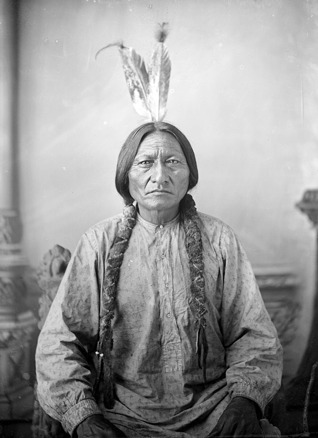
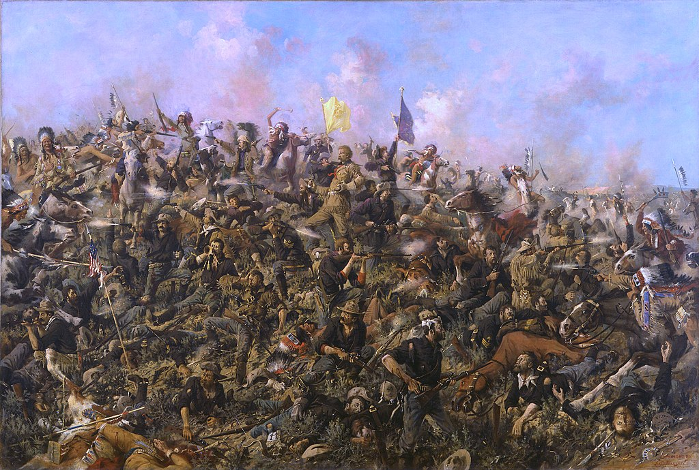

Chief Sitting Bull
Chief Sitting Bull was a wise and brave Native American leader who belonged to the Hunkpapa Lakota Sioux tribe. He lived a long time ago, in the 19th century, and is remembered for his courage and leadership during a challenging period in history.
Sitting Bull was born in what is now South Dakota around 1831. He became a powerful chief and played a crucial role in the Battle of Little Bighorn in 1876, where he and his warriors defeated General Custer and the U.S. Army. This battle is also known as "Custer's Last Stand."
Sitting Bull was known for his strong connection to the land and his people's traditions. He was a great spiritual leader and a skilled warrior. He worked to protect the way of life for his tribe and other Native American communities.
Unfortunately, as the United States expanded westward, there were conflicts between the Native Americans and the U.S. government. Sitting Bull and his people faced difficult times, including the tragedy at Wounded Knee in 1890, where he lost his life.
Despite the challenges, Chief Sitting Bull is remembered as a symbol of resistance and the fight for justice. His legacy continues to inspire people to appreciate and respect the rich history and culture of Native American communities.

Short Biiography: Chief Sitting Bull
Chief Sitting Bull was a remarkable leader of the Lakota Sioux, a Native American tribe. Born in 1831 near the Grand River in present-day South Dakota, Sitting Bull became one of the most respected and influential figures in Native American history.
Sitting Bull, whose Lakota name was Tatanka Iyotanka, grew up in a world filled with the beauty of the Great Plains and the traditions of his people. As a young boy, he learned essential skills like hunting and tracking, and he quickly became known for his bravery and wisdom.
As Sitting Bull grew older, he earned a reputation as a fearless warrior and leader. He played a crucial role in battles against rival tribes and became a key figure in his community. Sitting Bull's bravery and wisdom made him a respected leader among the Lakota Sioux.
One of the most famous events in Chief Sitting Bull's life was the Battle of Little Bighorn in 1876. Sitting Bull, along with other Native American leaders like Crazy Horse, led their people to victory against General George Custer and the U.S. Army. This battle is also known as "Custer's Last Stand."
Despite his bravery in battle, Chief Sitting Bull was also a strong advocate for peace. He wanted his people to live freely on their ancestral lands and resisted the encroachment of settlers. Sitting Bull believed in the importance of preserving Lakota traditions and way of life.
In 1881, after years of struggle and hardship, Chief Sitting Bull surrendered to the U.S. government to ensure the safety of his people. Although his later years were marked by challenges, his legacy endures as a symbol of Native American resistance, bravery, and leadership.
Chief Sitting Bull's life was filled with courage, wisdom, and a deep connection to his people and their land. Today, we remember him as a hero who stood up for his beliefs and the rights of the Lakota Sioux. His legacy teaches us about the importance of courage, leadership, and respect for diverse cultures.
Fun Facts
Cultural Hero: Chef Sitting Bull, also known as Chief Sitting Bull, was a revered Native American leader of the Lakota Sioux tribe. He is celebrated for his courage, wisdom, and his role in defending the rights of his people.
Medicine Man: Sitting Bull was not only a skilled warrior and leader but also a spiritual figure. He held the title of "Wichasha Wakan" or "Holy Man" among his people, and he had powerful visions that guided his actions.
Symbol of Resistance: Sitting Bull is remembered for his resistance against the encroachment of Native American lands by European settlers and the U.S. government. He played a crucial role in the Battle of Little Bighorn, where he and his allies defeated General Custer's forces.

Timeline
1831: Sitting Bull is born in present-day South Dakota.
1860s: He gains prominence as a warrior and leader within the Lakota Sioux tribe.
1876: Sitting Bull leads his people in the Battle of Little Bighorn, also known as Custer's Last Stand, where they achieve a significant victory against the U.S. Army.
1881: After years of resisting U.S. forces, Sitting Bull surrenders to prevent further bloodshed and is taken to a reservation.
1890: Tragedy strikes as tensions rise after the Wounded Knee Massacre, leading to Sitting Bull's death.
Chief Sitting Bull's Impact on the World
Chef Sitting Bull's legacy continues to inspire people today, reminding us of the importance of preserving cultures, standing up for justice, and respecting the land and its native inhabitants.
Reference Books for Elementary Students
Here is a list of recommended books about Chief Sitting Bull that are suitable for elementary students:
"Sitting Bull: Dakota Boy" by Augusta Stevenson
This book is part of the Childhood of Famous Americans series and provides a simple and engaging introduction to Sitting Bull's early life.
"Sitting Bull: Lakota Warrior and Defender of His People" by S. D. Nelson
S. D. Nelson's book is beautifully illustrated and offers a more detailed look at Sitting Bull's life, emphasizing his role as a warrior and defender of the Lakota people.
"Who Was Sitting Bull?" by Stephanie Spinner
Part of the popular "Who Was?" series, this book provides an accessible biography of Sitting Bull, including key events and contributions he made during his life.
"Sitting Bull: Great Sioux Chief" by Ian Shimwell
This book is part of the Signature Lives series and is designed for young readers. It covers Sitting Bull's life and legacy in an engaging and age-appropriate manner.
"Sitting Bull: The Life of a Lakota Sioux Chief" by Gary Jeffrey
This graphic novel presents Sitting Bull's life in a visually appealing format, making it accessible and interesting for elementary students.
"Sitting Bull: Dakota Boy" by Joseph Bruchac
This is another option with a focus on Sitting Bull's childhood, written by Joseph Bruchac, a well-known author of Native American literature for children.
Remember to check the reading level and content of each book to ensure it aligns with the age and maturity level of the elementary students you are targeting. Additionally, it's always a good idea to preview the books to ensure they provide accurate and culturally sensitive information about Chief Sitting Bull.